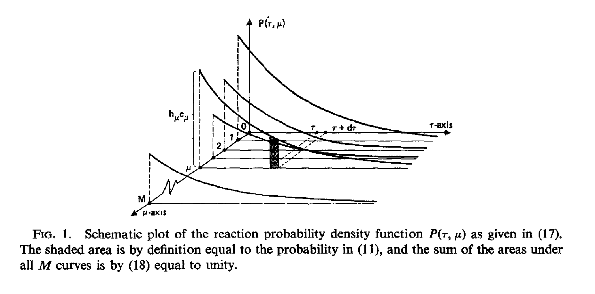

name: inverse layout: true class: center, middle, inverse --- #Temporal Gillespie Algorithm Sean Wu --- layout: false .left-column[ ## The Gillespie Algorithm ] .right-column[ The Gillespie Algorithm belongs to a type of simulation algorithm called exact stochastic simulation algorithms. It simulates a trajectory from a continuous-time Markov process on a discrete state space. - The Gillespie Algorithm was originally developed between 2 papers in 1976 and 1977 for simulation of biochemical reactions, although in Dan Gillespie's 1977 paper he uses the Lotka-Volterra model as one of the examples. - The original formulation of the algorithm and many of its derivatives assume spatial homogeneity, the "well stirred tank". - Before the Gillespie Algorithm there was no way to handle stochastic simulation; in a very few cases the "chemical master equation", the Kolmogorov forward equation for a stochastic process can be solved analytically but is almost always intractable, so the only way to study the dynamics of the system is through stochastic simulation. ] --- .left-column[ ## The Gillespie Algorithm ] .right-column[ There are two main ways to implement the original algorithm, both are statistically equivalent but of different efficiency in the number of random numbers that must be generated. - First Reaction Method: Given the rate constants and state vector, simulate putative times to transition from <i>i</i> to all other states <i>j, j ≠ i</i>. Requires <i>r-1</i> random numbers, if <r> is the number of reactions/events. - Direct Method: Calculate the sum of the propensity/hazard functions given the rate constants and state vector. Simulate the time to next event from that exponential distribution, then simulate which event occured as multinomial. Requires 2 random numbers.  ] --- .left-column[ ## Temporal Gillespie Algorithm ] .right-column[ While the standard algorithm assumes spatial homogeneity/homogeneous mixing population, networks are a generic way to represent distance between individuals, be it social, physical, or some other form of distance. ] --- name: last-page template: inverse References: Slideshow created using [remark](http://github.com/gnab/remark).